01
⌗
Scan
Leggi il codice riportato sulla confezione per identificare il prodotto e acquisire i dati disponibili.
IDENTIFICAZIONEMAGAZZINO STUDIO DENTISTICO
Carichi, scarichi e tracciabilità dei materiali in un unico ambiente web. Meno passaggi nelle attività quotidiane, più tempo da dedicare al paziente.
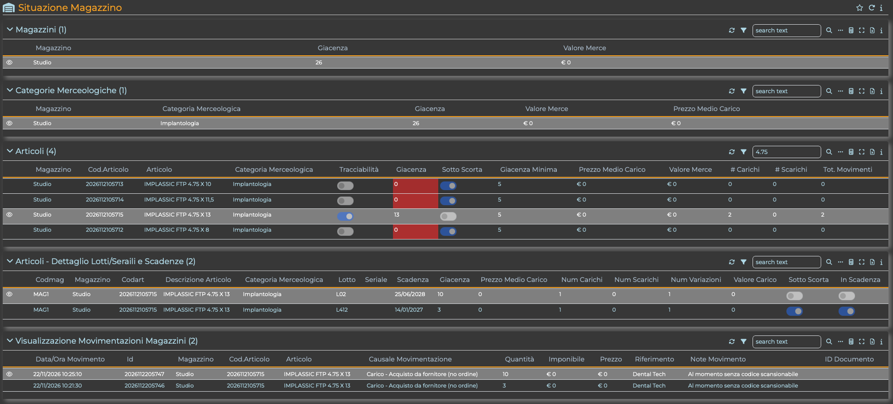
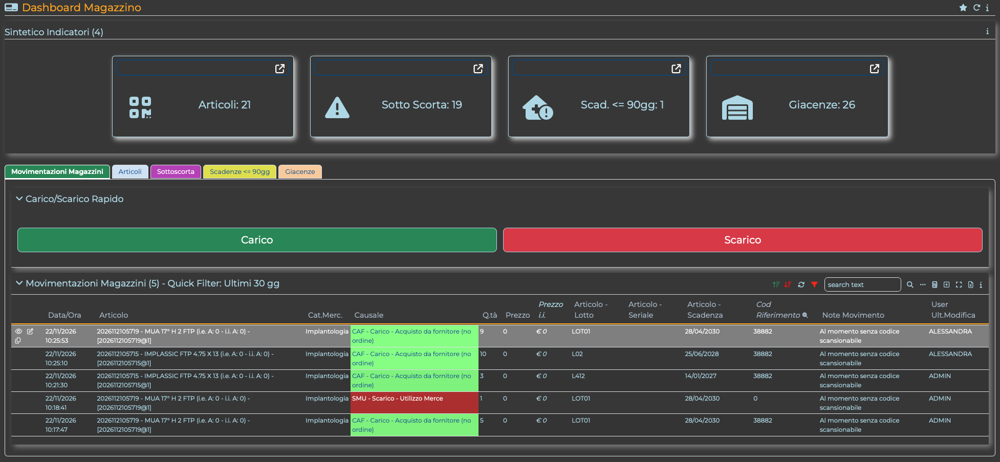
IL METODO eESSENTIAL
La gestione dei materiali non dovrebbe diventare un'attività lunga e macchinosa. Durante un intervento, registrare il consumo di un prodotto deve richiedere il minor numero possibile di operazioni. E anche il ricevimento della merce deve essere rapido.
SCAN · CONFIRM · DONE
La scansione recupera le informazioni disponibili. L'operatore verifica ciò che serve e conferma l'operazione.
Leggi il codice riportato sulla confezione per identificare il prodotto e acquisire i dati disponibili.
IDENTIFICAZIONEControlla le informazioni acquisite e completa soltanto i dati eventualmente mancanti.
VERIFICAConferma il carico o lo scarico: il movimento viene registrato nel magazzino.
REGISTRAZIONEOPERATIVITÀ QUOTIDIANA
Due attività fondamentali, gestite con una logica coerente: scansione, verifica delle informazioni e conferma del movimento.
La scansione identifica il prodotto. L'operatore completa quanto necessario e conferma lo scarico. In base al prodotto e ai dati richiesti, il flusso può ridursi a un semplice Invio e alla conferma.
Guarda le schermate ↗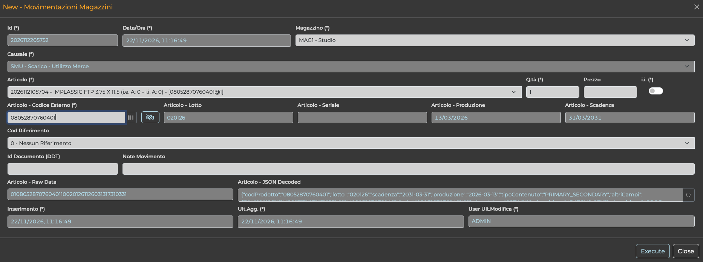
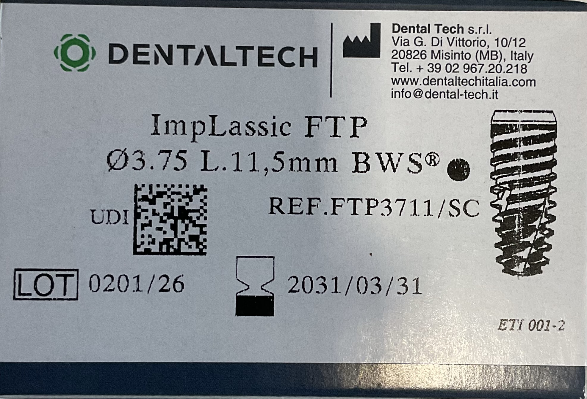
Quando arriva una fornitura, la scansione recupera i dati presenti nel codice. Le informazioni mancanti possono essere completate prima della conferma, evitando di ridigitare quanto è già disponibile.
Guarda le schermate ↗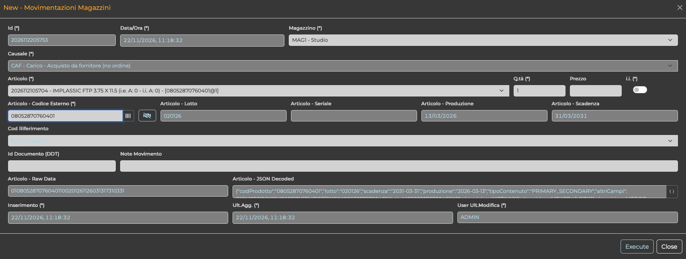
IDENTIFICAZIONE E TRACCIABILITÀ
Nel settore dentistico le confezioni possono riportare codici differenti. eEssential è pensato per acquisire i codici supportati, tra cui DataMatrix, GS1 e HIBC, e utilizzare le informazioni disponibili per identificare il prodotto e gestire la tracciabilità.
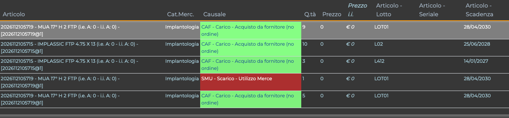
IL MAGAZZINO SOTTO CONTROLLO
Le viste riuniscono le informazioni necessarie alla consultazione quotidiana: articoli, disponibilità e movimenti. Dalla panoramica è possibile approfondire il dettaglio, applicare filtri e individuare rapidamente ciò che serve.
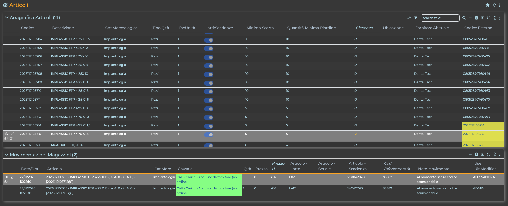
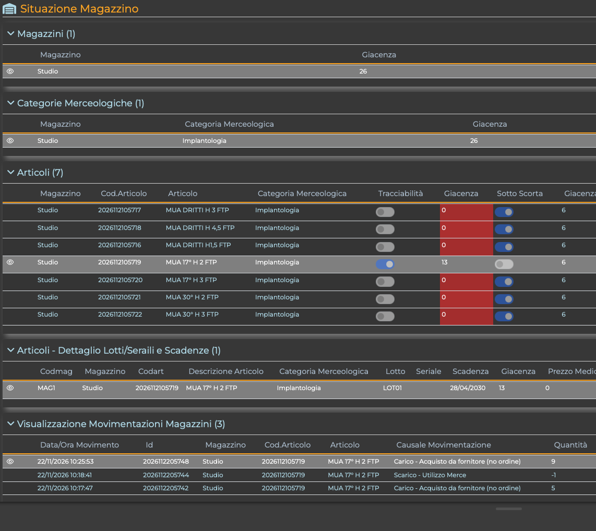
ANAGRAFICA ARTICOLI
L'anagrafica raccoglie le informazioni necessarie a identificare e gestire i prodotti: codici, descrizioni, categorie e dati di tracciabilità, secondo le caratteristiche e la configurazione dell'applicazione.
UN'ESPERIENZA UNIFORME
Le pagine condividono modalità operative coerenti. Una volta acquisita la logica di una griglia o di un form, gli stessi strumenti si ritrovano nelle altre aree.
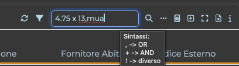
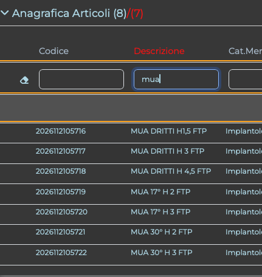
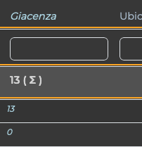
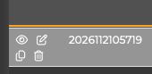
FORM E CONFIGURAZIONE
I form permettono di inserire e consultare informazioni attraverso campi di diversa tipologia. I contenuti possono essere distribuiti in schede (tab), per rendere più leggibili anche le pagine articolate.
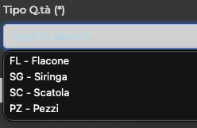
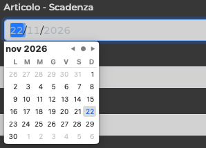
eESSENTIAL · MAGAZZINO STUDIO DENTISTICO
Scopri come portare ordine e semplicità nella gestione dei materiali dello studio.